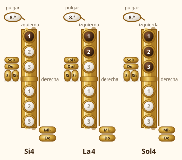

Módulo 5: Primeras notas: Si, La y Sol
Tres notas con la mano izquierda, primera lectura de partituras y primeras melodías.
Con solo la mano izquierda ya tocas tres notas: Si (un dedo), La (dos) y Sol (tres). Cada nota que baja en el pentagrama pide un dedo más.
Si, La y Sol
1. Cómo se leen: el pentagrama y la clave de Sol
El saxofonista lee en clave de Sol. Las notas que ves escritas no son exactamente las que suenan (el saxo alto suena una sexta mayor más grave; lo verás en el módulo 9), así que de momento solo nos importa qué nota escrita corresponde a qué dedos.
Cada línea y cada espacio del pentagrama es una nota. De abajo arriba, las líneas son Mi–Sol–Si–Re–Fa y los espacios, Fa–La–Do–Mi. Las notas de este módulo están en la parte media del pentagrama:
- 🎼 Si: en la tercera línea (la del medio).
- 🎼 La: en el segundo espacio.
- 🎼 Sol: en la segunda línea (donde se enrosca la clave).
2. Los dedos de la mano izquierda

| Nota escrita | Dedos | Cómo recordarlo |
|---|---|---|
| Si (Si4) | 1 (índice izquierdo) | El primer dedo: la nota más aguda de las tres |
| La (La4) | 1 y 2 | Añade el siguiente dedo y baja un escalón |
| Sol (Sol4) | 1, 2 y 3 | Todos los dedos de la mano izquierda: la más grave de las tres |
💡 Cómo se hace
3. Las duraciones
| Figura | Dura | Cómo contarla |
|---|---|---|
| Redonda | 4 tiempos | 1-2-3-4 |
| Blanca | 2 tiempos | 1-2 |
| Negra | 1 tiempo | 1 |
| Silencio de negra | 1 tiempo sin sonido | El pulso sigue contando |
La partitura empieza con un compás de 4/4: cuatro tiempos por compás. Marca el pulso con el pie y cuenta en voz alta «1-2-3-4».
🎼 Si – La – Sol con redondas
Mantén cada nota los cuatro tiempos y cambia de dedos sin que el sonido se interrumpa.
🎼 Si – La – Sol con blancas
Cada blanca dura dos tiempos. Cuenta «1-2» en cada nota.
🎼 Si – La – Sol con negras
Una nota por cada pulso. Mantén el aire continuo aunque cambies de dedos.
4. Tu primera melodía
Con Si, La y Sol ya puedes tocar una melodía tradicional. Escúchala con el acompañamiento y luego tócala tú.
🎼 Pan caliente (Hot Cross Buns)
Melodía tradicional (dominio público), en versión sencilla. Escucha la grabación con acompañamiento y toca con ella.
🎼 Pregunta y respuesta con Si, La y Sol
Los dos primeros compases «preguntan» y los dos siguientes «responden». Inventa después tu propia pregunta y respuesta con las tres notas.
🗓️ Plan de estudio de 10 minutos
- 2 min · Sol largo (4 tiempos), La largo y Si largo, respirando entre notas.
- 3 min · Las redondas, las blancas y las negras de este módulo, con metrónomo a 60.
- 3 min · La melodía «Pan caliente», despacio y sin parar.
- 2 min · Invéntate una melodía de cuatro compases con las tres notas y apúntala.
⚠️ Errores frecuentes y cómo corregirlos
| Lo que pasa | Por qué | Cómo corregirlo |
|---|---|---|
| El sonido se corta al cambiar de nota | Los dedos van a destiempo | Mueve los dedos juntos y sin golpearlos; haz el cambio a un tempo lento |
| Sale una nota más aguda de la esperada | Una llave no está cerrada del todo | Cubre las llaves con la yema, no con la punta, y comprueba que no se escapa aire |
| Pierdo el pulso | Estoy más atento a los dedos que al ritmo | Marca el pulso con el pie y cuenta en voz alta |